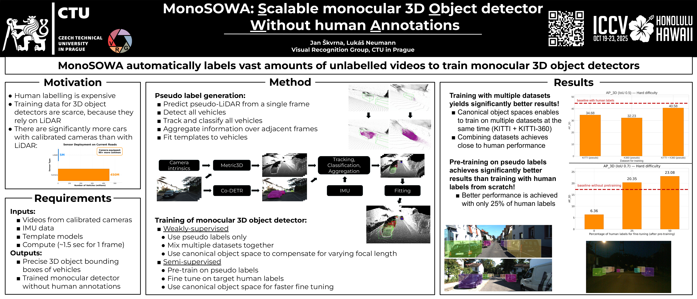

Building scalable 3D understanding with minimal supervision.
Computer Vision PhD Student at CTU Prague.

Computer Vision PhD Student at CTU Prague.
Secured 1st place (and $10k prize) at the CVPR 2025 Structured Semantic 3D Reconstruction Challenge.
View LeaderboardI am a PhD student at the Visual Recognition Group, Czech Technical University, advised by Lukas Neumann.
My research focuses on Weakly-Supervised 3D Detection for autonomous driving. I aim to reduce the reliance on expensive 3D annotations by leveraging temporal consistency and 2D cues from off-the-shelf vision models.
Previously, I completed my MSc with honours, receiving the Dean's Award for my thesis on 3D object detection.
